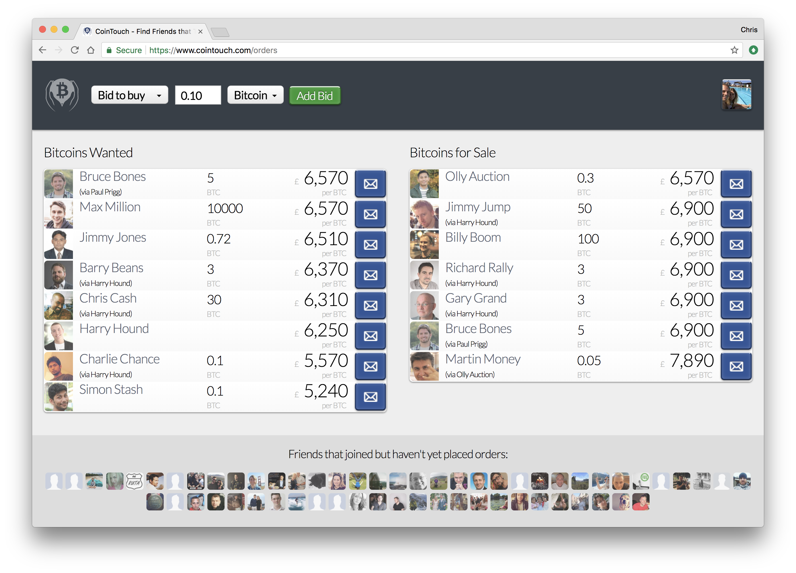

CoinTouch.com was a website that found friends of friends that trade crypto-currency, allowing exchange-like functionality but with true peer-to-peer trading.
I built CoinTouch after bad experiences with centralised crypto-currency exchanges. The exchanges were unnecessary as my extended social network linked me to many casual crypto traders. CoinTouch users found themselves linked to dozens of other CoinTouch users through two degrees of social connection.
Through CoinTouch, a user could place bids (to buy) and offers (to sell), visible to friends (and their friends), using social network connections loaded from Facebook and Google (with user permission on login). A user's bids and offers were placed at a given spread from market prices (e.g. offer to sell at market price + 2%). CoinTouch used data feeds from centralised exchanges to present an up-to-date bid / offer price based on these spreads.
With a click, a Facebook "Send Message" could be opened, allowing users to securely set up their peer-to-peer trade. With all users being connected via friendship (direct or second-degree), users were able to verify each other's identity away from CoinTouch for added security.
I ran the website at a loss (there is no charge for use, or for trading), which was fine as my day job covered the bills.
With sadness, CoinTouch was shut down in April 2018, after four years of operation.
Unfortunately the European Union's new GDPR (General Data Protection Regulation), introduced on 25th May 2018, creates uncertainty and risk that I can't justify taking.
GDPR threatens website owners with fines of 4% of turnover or €20 million (whichever is higher) if they do not jump through a number of ambiguously-defined hoops. The law, combined with parasitic no-win-no-fee legal firms, puts website owners at risk of vindictive reporting. Young websites and non-profits cannot afford legal teams. Therefore the risk posed by GDPR is unacceptably high.
I asked trusted contacts in the industry for advice on how to make CoinTouch GDPR compliant. They came back with different answers (through no fault of their own - the law is ambiguously defined). I concluded that I cannot justify running a free service while taking on a legal risk.
So, perversely, this new EU law hurts small website like mine, but helps reinforce the dominance of Facebook, Google and Twitter, who are able to prepare and defend themselves using established legal teams and cash reserves, and who now face less competition from startups. The EU Cookie Law, EU VAT regulation and now the EU GDPR are all examples of poorly-implemented laws that add complexity and unintended side-effects for businesses within the EU.
I recently shut down another of my websites, StreetLend.com for similar reasons, and will spend from now until May 25th shutting down and securing my remaining non-profit websites. Sadly it seems I am not alone in doing so.
CoinTouch was created by Chris Beach as a side project in 2014, using Scala, Play Framework, jQuery, Neo4J and MongoDB.